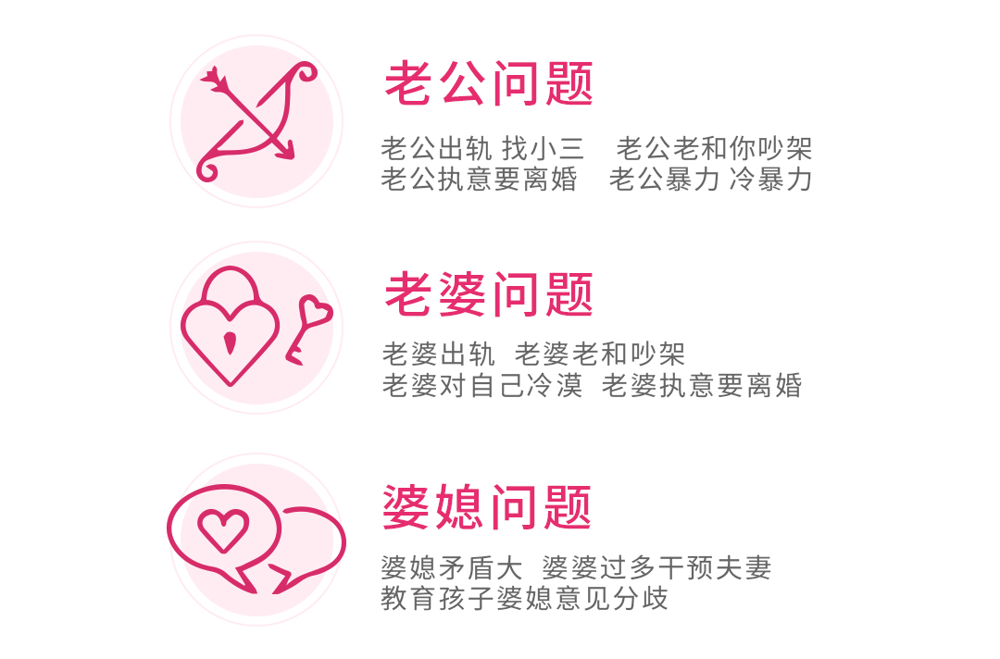
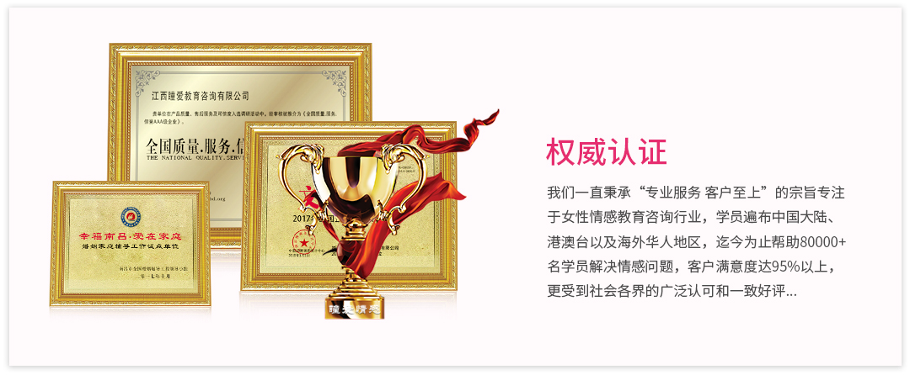
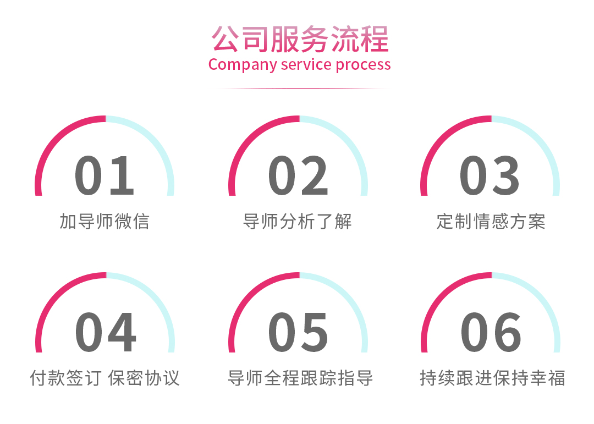

李女士当年33岁，和老公是高中同学，高中就相恋，有十几年的感情，结婚五年，小孩两岁半。 穿一件黑色长款羽绒服，头发随意的扎着，脸很黄没有一丝笑容，典型的“黄脸婆”的姿态。 李女士当时还想要自杀，觉得活的没有意义，她也不管孩子。是小三发信息，李女士才知道原来老公已出轨四年。 其实第一次沟通李女士的态度很不好的，她说我让她改变是不可能的，她觉得自己没做错任何为什么她需要改变呢? 后来的几次几次沟通里李女士确定了自己还是想要挽回老公，只是自己心里过不去那个坎，她觉得她老公不爱她。 当时的李女士没讲过老公一句不好，总是说我觉得我老公很帅我老公很man，她只想知道的他老公究竟爱不爱她? 当时她执着于爱与不爱里，和老公的关系降到冰点，吵架是天天的，依然不管小孩，婆婆对她也很不满意。 有一天和老公打架以后过来找我，给了我一份离婚协议要我保管，有他们双方签字按手印的， 然后李女士的老公有来找我，他对她的评价很低，说她各种不好，说他们其实不合适。 我问李女士的老公，你觉得她合适怎样的男人呢?那次以后他们的关系稍微有点缓和。 然后李女士心情好一点点了，李女士开始慢慢改变，做发型、买衣服、去美容，去按摩……其实消费， 不是为了肉体的满足与舒适，而是为了给自己的魔力加油，让自己的心灵得到更多的滋养。 李女士慢慢变的不在执着爱与不爱了，她开始慢慢的做些自己曾经喜欢但是已经放弃了的事情。 在不知不觉中他们不在闹离婚了.进入了一个看似和睦，又各怀心思的时期。 达到这种状态其实已经过去一年，然后发生了一个事件是：李女士的小孩被感染手足口病，高烧不退， 被送进重症监护。这一次激发了男人的爱意吧，他俩一起守护一起等待，害怕那个小生命会陨落。 经历了这次，李女士和我说，她觉得爱与不爱真的没有那么重要了，她要为了小孩也要好好生活， 然后全情投入工作生活中。我问她，那感情呢，李女士说他老公对她就是那样，她习惯就好。 一年半后再见李女士，整一个光彩照人的样子，特别的明媚。她说她现在得到了她想要的一切， 老公开始看着她了，每天电话信息遥控着，她开始有自己的闺蜜圈，和同事的相处也极好， 甚至有了几位异性爱慕者。现在四年了，近期她又生了二胎，算是圆满幸福了吧。
郑女士经过咨询，夫妻双方化解了矛盾，从离婚边缘走了出来。郑女士在咨询一开始，就不断陈述自己对夫妻关系陷入僵局的愤怒， 面对丈夫“出轨”的质疑的感叹。情感专家能够感受到她的内心澎湃着的对亲密关系的惋惜， 对婚姻瓶颈的哀伤和对丈夫恨铁不成钢的埋怨。但是，从郑女士的陈述中，情感专家也感受到，她内心依然存在对对方的爱， 以及在郑女士对冲突的描述中，看不出彼此三观上存在较大的差异。因此情感专家没有去触碰和帮助她去在探寻生活细节， 去搜集丈夫可能出轨的“证据”，而是“退后一步”引导郑女士女士从更大的视角，从双方原生家庭的角度， 去谈一谈他们小家庭和大家族之间的生活，情感交流等等情况。就在郑女士慢慢的陈述双方家族的交往过程中，渐渐发现， 现实中郑女士女士夫妻关系不匹配和同步的部分，源自与原生家庭的创伤，而这部分习得性的创伤，并没有随着小家庭的建立得到冲淡、 消化、弥散，反而因为夫妻关系的越来越亲密，彼此童年创伤为满足的缺爱、缺关怀的遗憾，转而对对方的攻击性索取。 郑女士女士也渐渐意识到，自己对家庭问题看法局限肤浅，个性强烈，很多时候，任性不听解释，也没有深层去考虑， 最终导致夫妻两个渴望爱、相爱却又因为童年创伤不懂得表达爱的人，选择了“赌气”的方式在夫妻亲密关系上互相对抗， 用性生活去要挟对方，导致家庭进入离婚的危机。寻找到了症结，也就找到了“破解”的方法，情感专家运用精神分析和动力疗法帮助她， 第一，改善亲密关系，保持一定的周期和频率。第二，沟通方式上，郑女士女生要放下“小公主”心态，学会引导丈夫。 专家评语：生活中，热恋中的男女好，家庭中的夫妻也罢，与相爱的人讲道理很难，当关系中的双方都携带了原生家庭带来的创伤和 心理需求，就更难看到关系中真实的对方，用成熟的方式去经营一段亲密关系。
双方经家人介绍认识，当时丈夫在部队当兵，为部队司务长以上军职，丈夫为外地人非杭州本地及周边人，家族庞大， 普通农民，后随着社会发展，丈夫家族开始好转。妻子为解放前大资本家，因此自幼就受父母家族遗传对自身有种优越感和孤傲的性格。 当时双方交往，为丈夫非常热烈的追求妻子，妻子同意结婚，妻子自认并没有爱情。结婚后由于丈夫常年在部队，因此双方分居， 妻子独自在杭州照顾女儿和家庭，（但是妻子始终看不起丈夫的家庭和父母，几乎从不叫丈夫的父母。） 丈夫与5年前复原后回到地方，由于妻子强烈要求定居在杭州，丈夫的家族此时在他们当地已经很有实力。 于是丈夫的事业在杭州一切都必须从头开始，丈夫个性压抑，好强，独立，坚毅。在短短3年后，丈夫事业有成，家庭生活为中上等家庭。 妻子自幼与母亲关系一般，与父亲关系亲密，自认父亲是个讲道理的人，但随着父亲在3年前去世， 当时丈夫工作原因没有及时提供第一手帮助，这是妻子一直在内心无法原谅丈夫，每天在家中抱怨责怪丈夫， 遇到任何一点小事都要指责丈夫，经常给丈夫脸色看，夫妻不断发生争吵，自此开始家庭气氛变的压抑，丈夫开始不愿意回家。 今年6月，妻子收到一条短信，是一个女孩发给妻子的，要求妻子与丈夫离婚，并且说自己已经怀孕，这件事情，导致夫妻关系彻底爆发。 夫妻双方一起来进行咨询。咨询师站在完全中立的角度，帮助妻子逐渐认识到她身上的问题，她与丈夫之间由她制造的起因，丈夫的问题， 夫妻之间的性格问题，家庭关系问题。之后丈夫向妻子坦白了所有的内容，并且与小三彻底分手，给了小三一笔分手费，彻底结束关系。




点击这里复制微信号！
点击下方打开微信，微信右上角有个"十"的符号，选择"添加朋友"，然后粘贴即可